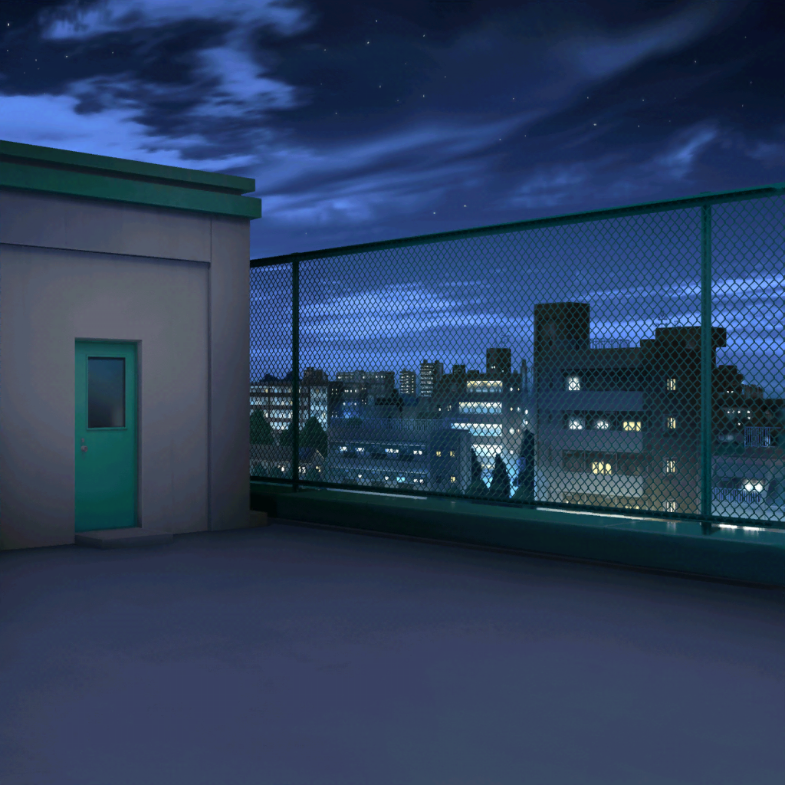

駅前
日菜
あ、こころちゃん！
来てくれたんだね！
こころ
来たわよっ！
今日は大事な天文部の活動の日だもの！
日菜
だねっ。
それじゃあさっそく、ぶかつどーはじめようか

CiRCLE カフェ
日菜
いやあ〜、こころちゃんが天文部でよかったよ。
じゃなきゃあたし、カンペキ１人だったからね〜
こころ
どちらの学校も天文部はあたし達、１人ずつしかいないものね
日菜
そ。ウチの学校では天文部は「変人の住処」みたいに言われて
だーーれも寄り付かないから
こころ
うちの学校には天文部はなかったのよ。
でも……

花咲川女子学園 屋上
こころ
うーん、何か楽しいことはないかしら……？
朝から今までずっと探しているのにやっぱり見つからないわ
こころ
あら……？
ここは星がよく見えるのね。邪魔するものがなくて、とっても
キレイだわ！
学校の先生
そこにいるのは誰だ！
こころ
あら、先生！
ここは星がキレイなのよっ。先生も一緒にどう？
学校の先生
弦巻さん……？
なぜこんなところに？
こころ
そこにいる人たちが屋上に入れてくれたのよ。
そんなことはいいから、早く一緒に星を見ましょうっ！
学校の先生
（……本来なら謹慎処分でもおかしくはない。しかし、弦巻家の
一人娘にそんな処分をくだしたら、私の身は……！）
学校の先生
つ、弦巻さんは天文部なんですよね！
いやあ〜、遅くまで活動、お疲れ様！
こころ
天文部？ あたしは部活には入ってないわ！
学校の先生
あ、あれ？ そうでしたか！
それじゃあ、天文部を作りましょうっ！！
は、ははは〜！
こころ
……そんなことがあって、先生が天文部を作ってくれたの！
優しい先生よね
日菜
あははっ。こころちゃんぽい！
そういえばさ、最近新しい星が見つかったじゃん？
あたしも見つけてみたいなあ〜
日菜
それで、好きな名前をつけてみたりさ〜。
ヒナンティウス星！ みたいな！
こころ
いいわね、あたしも星に名前をつけてみたいわ！
日菜
それでそれで〜、いつかは移住してみたりして〜。
日菜ちゃんがその星の王様になるのだ！
こころ
いいわね。あたしはとある星の命名権を
持ってるんだけど、王様になるって発想はなかったわ！
日菜
えっ、命名権？ マジで！？
こころ
ええ。いつかの誕生日にお父様がくれたのよ
日菜
ん〜〜〜〜！！ やっぱりこころちゃんっておもしろい！！
日菜
あたしじゃないってだけで興味津々なのに、
ちょーーチョーー特別な人生を送ってるなんて
もう、興味ありまくりだよー！！
こころ
特別？ そうかしら？
日菜
特別特別〜っ！
こころちゃんみたいな人、めったにいないよっ
こころ
日菜、さっき星の王様になりたいって言ってたわよね？
あたし達で新しい星を探してみるのはどうかしら？
日菜
さんせーっ！！！ いいねいいね、すっごく楽しそう！
……で、どうやって探す？
こころ
そうね……まずは星がよく見えるところに行くのがいいわよね
日菜
山の方かな？ 空気がきれいで、空が澄んでるような……
こころ
それなら、いいところにうちの別荘があるわ！
そこに行ってみましょうっ！
日菜
おっけー！
……っていいたいところだけど、パスパレの活動もあるし、
山にいくなら荷造りもしないとね
こころ
そういえばあたしも、バンドのライブが近々あるわね
日菜
ねえ、今月末はどう？
たしか、今月末は流星群が見られる頃だったと思う！
こころ
いいわねっ！
あたし達が今までみたことのないような星が
見えるかもしれないわ！
日菜
楽しみー！
今からどんな名前をつけるか考えておこーっと！
こころ
それから、もし王様になるなら国の名前も必要よね！
日菜
確かに！
んーっ！ やばいねこころちゃんっ！
あたし、ワクワクが止まんないよー！！